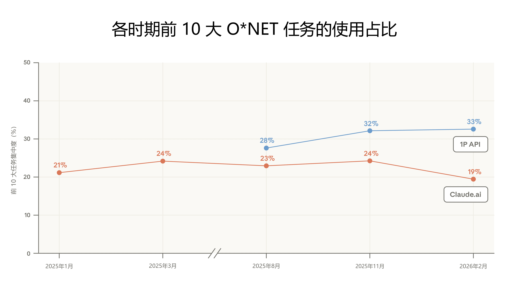
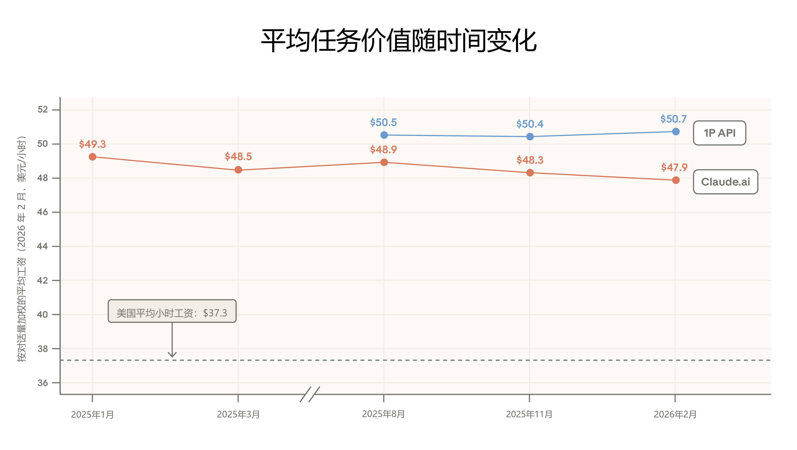
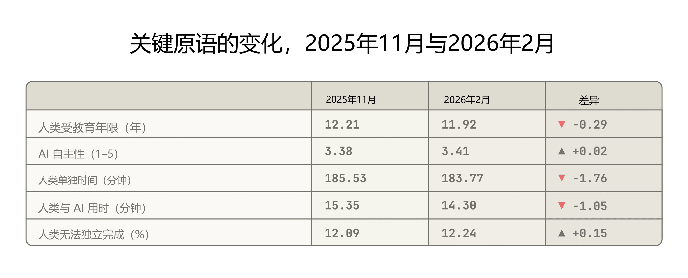
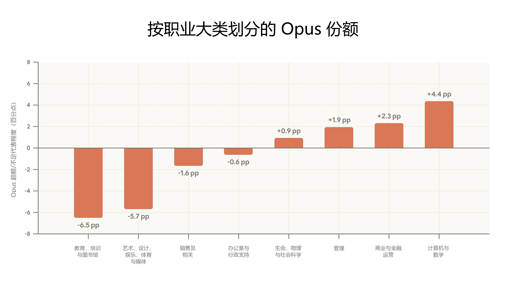
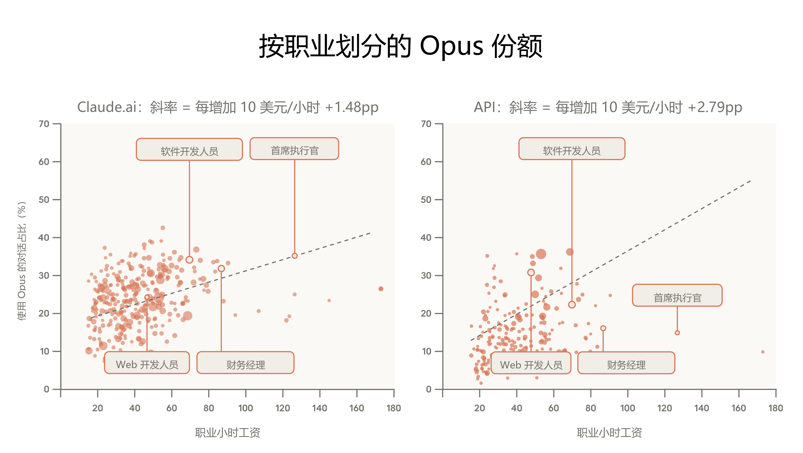
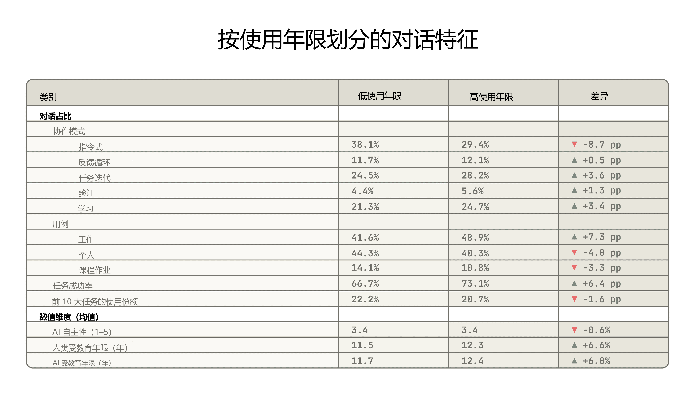
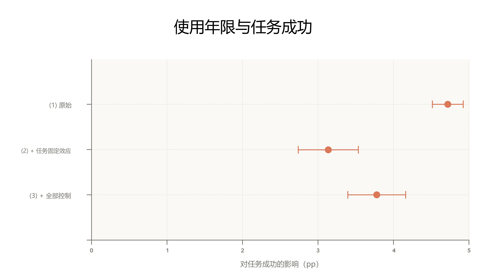

Anthropic经济指数报告：学习曲线
📖 中文摘要
专业术语注解
经济指数（Economic Index）：Anthropic定期发布AI真实经济使用数据的项目学习曲线（learning curve）：用户随使用时间增长而逐渐更熟练使用AI的现象增强与自动化（augmentation vs automation）：AI辅助人工作与AI独立完成的两种使用模式基尼系数（Gini coefficient）：衡量分布集中或平等程度的统计指标API：供程序调用模型功能的编程接口，开发者用其构建产品📄 中文全文
- 类别： 经济研究（Economic Research）
- 来源： https://www.anthropic.com/research/economic-index-march-2026-report
经济研究（Economic Research）
2026 年 3 月 24 日
阅读 PDF 版
Anthropic 经济指数使用我们的隐私保护数据分析系统来跟踪 Claude 在整个经济中的使用情况。这是我们尽早了解 AI 经济影响所做努力的一部分，以便研究人员和政策制定者有充足的时间做准备。
这份最新报告研究了 2026 年 2 月 Claude 的使用情况，建立在上一份报告（使用 2025 年 11 月的数据）中引入的经济原语（economic primitives）框架之上。我们的样本覆盖 2 月 5 日至 2 月 12 日，即 Claude Opus 4.5 发布三个月后，与 Claude Opus 4.6 的发布同期。
我们首先记录了使用情况相对于此前报告的变化：增强（augmentation）——即 AI 补充用户能力的协作式交互——的比例在 Claude.ai 和 API 流量中均略有上升。在 Claude.ai 中，使用情况更加多样化，上个月前 10 大任务占使用量的份额低于 2025 年 11 月。由于这种多样化，Claude.ai 中平均对话的任务工资水平略低于此前报告。
然后我们聚焦于决定 Claude 对劳动力市场和更广泛经济影响的一个重要因素：Claude 采用中的学习曲线。我们提供的证据表明，使用年限长的用户已经形成了能够更好地发挥 Claude 能力的习惯和策略。事实上，我们记录到更有经验的用户不仅尝试更高价值的任务，而且在对话中更有可能获得成功的回应。
自上次报告以来的变化
在第一章中，我们重新审视了 2026 年 1 月发布的上一份经济指数报告中的发现。我们发现： * Claude.ai 上的用例更加多样化。编码任务继续从 Claude.ai 的增强型使用迁移到我们第一方 API 流量中更自动化的工作流。1 在本报告中，Claude.ai 的使用更加分散：2 月份前 10 大任务占全部流量的 19%，低于 11 月的 24%。尽管如此，该样本中几乎所有任务都曾出现在我们之前的样本中。约 49% 的职业中，至少有四分之一的职业任务是通过 Claude 完成的。 * Claude 的采用扩展到更低工资的任务。随着用例的多样化，在 Claude 上完成工作的平均经济价值——以相关职业中美国工人所得工资衡量——略有下降。从机制上看，这是因为围绕体育、产品比较和家庭维护的个人查询增多。这一模式与标准的"采用曲线"叙事一致：早期采用者偏爱编码等特定的高价值用途，而后期采用者承担范围更广的任务。 * 全球使用的不平等持续存在。使用仍然高度集中：前 20 个国家占所有人均使用量的 48%，高于此前的 45%，凸显了全球采用方面持续存在的差距。然而，美国国内的人均 Claude 使用量继续趋同：自上次报告以来，使用量最高的 10 个州所占份额从 40% 下降到 38%。
学习曲线
经济指数的一个核心发现是，Claude 的早期采用非常不均衡：Claude 在高收入国家使用更密集，在美国的知识工作者聚集地使用更密集，并且集中于相对较小的专业任务和职业集合。 一个重要的问题是，采用的不平等可能如何决定 AI 收益流向何处、流向何人。例如，如果有效的 AI 使用需要互补技能和专业知识——我们在上一份报告中论证过这一点——并且如果这些技能可以通过使用和试验获得，那么早期采用的好处可能是自我强化的。 在第二章中，我们研究用户如何塑造他们从 Claude 中获得的价值：他们如何将模型能力与手头任务匹配，以及使用模式和结果如何随平台上的经验而变化。 * 模型选择与任务匹配。我们表明，用户会选择我们最智能的模型类别 Opus 来处理在劳动力市场上通常获得更高工资的任务。例如，在付费的 Claude.ai 用户中，Opus 在编码任务中的使用率比平均值高 4 个百分点，在与辅导相关的任务中比平均值低 7 个百分点。对于 API 用户，这种模型切换的幅度大约是其两倍。 * 使用年限越长，成功率越高。总体而言，最有经验的 Claude 用户更多将其用于高教育水平任务，更少用于个人用例。例如，使用 Claude 6 个月或更久的人，个人对话减少 10%，其输入反映的教育水平提高 6%。最引人注目的是，这一较高使用年限群体在对话中的成功率高出 10%，这种关联无法用他们的任务选择、来源国或其他因素解释。虽然这可能反映早期采用者的成熟度，但也可能是"干中学"（learning-by-doing）的证据——人们通过经验变得更善于使用 Claude。
自上次报告以来的变化
Claude.ai 用例的多样化
我们首先看 Claude 被要求执行的任务类型。我们使用隐私保护系统，它使我们能够在聚合层面描述行为，而不泄露单个转录的内容。我们从Claude.ai（我们的面向消费者的网页产品）和我们的第一方 API（面向开发者的、将 Claude 集成到产品和流程中的接口）各抽取 100 万次对话。2
编码仍然是我们平台上最常见的用途，与计算机和数学职业相关的任务占 Claude.ai 对话的 35%（见附录）。3 然而，在 2025 年 11 月至 2026 年 2 月期间，Claude.ai 上的用例变得更加分散：最常见的 10 个 ONET 任务占对话的比例从 24% 降至仅 19%（图 1.1）。
这种集中度的下降部分反映了编码任务从 Claude.ai 迁移到我们的第一方 API，Claude Code 已占抽样流量的很大一部分。Claude Code 的智能体架构将编码工作拆分为更小的 API 调用，这些调用被标记为不同的任务。因此，虽然编码在 API 流量中的总体份额有所增长，但它分散在众多任务类别中，而不是集中在少数几个。结果，尽管编码活动涌入，API 中的任务集中度大致保持平稳。

编码从 Claude.ai 迁移并不是推动集中度下降的唯一因素。部分下降源于两个时期之间用例构成的变化。课程作业从占对话的 19% 下降到 12%，而个人使用从占对话的 35% 上升到 42%。课程作业下降的一部分可以用学术日历解释——在我们抽样期间，一些国家的学生正处于寒假。4 与此同时，2 月前后注册量的增加带来了更多普通 AI 用户。
 图 1.2：2025 年 11 月和 2026 年 2 月 Claude.ai 上的工作、个人和课程作业使用。 Claude.ai 上被识别为工作、个人或课程作业相关对话的份额。
图 1.2：2025 年 11 月和 2026 年 2 月 Claude.ai 上的工作、个人和课程作业使用。 Claude.ai 上被识别为工作、个人或课程作业相关对话的份额。
虽然 Claude 工作任务的范围变得更加多样化，但几乎所有这些任务之前都曾出现在我们的数据中。在上一份报告中，我们指出 49% 的职业中至少有四分之一的职业任务是通过 Claude 完成的。在这次数据抽取中，这一累计估计几乎没有变化（附录图 A.2）。本报告的数据显示，新颖的 ONET 任务比上一份报告少得多。
自第一份报告以来，我们将对话分为五种交互类型之一——指令式（directive）、反馈循环（feedback loop）、任务迭代（task iteration）、验证（validation）和学习（learning）——并将它们归为两个更广泛的类别：自动化（automation）和增强（augmentation）。5 图 1.3 显示 Claude.ai 中的增强略有增加。这由验证和学习模式的小幅上升推动。在附录图 A.3 中，我们显示 1P API 数据中的自动化急剧下降。
 _图 1.3：协作模式份额，Claude.ai。* Claude.ai 中各 Anthropic 经济指数报告的协作模式频率。_
_图 1.3：协作模式份额，Claude.ai。* Claude.ai 中各 Anthropic 经济指数报告的协作模式频率。_
我们的 API 平台继续获得相对更高的计算机和数学任务份额（按职业类别划分的使用份额见附录）。自 2025 年 8 月以来，该类任务在 API 中的份额增加了 14%，在 Claude.ai 中下降了 18%。正如我们在劳动力市场影响报告中指出的，我们预计这种从 Claude.ai 向 API 的迁移可能预示着相关职业的工作将更迫近地发生转变。Claude.ai 中与管理工作相关的任务增加——从占流量的 3% 上升到 5%——来自分析类任务（如准备投资备忘录）和回答客户问题的混合。 衡量 Claude 上任务组合变化的另一种方式是看任务平均价值的变化，我们将其定义为执行该任务的美国工人的平均小时工资（图 1.4）。6 Claude.ai 中任务价值的这一估计从 49.3 美元略微下降到 47.9 美元，主要是因为简单事实性问题（如体育赛果、天气）的增加，以及编码向 API 迁移导致的减少。正如我们在上一份报告中提到的，我们在 Claude 上看到的任务往往需要更高的教育水平。该图显示这些任务往往也比美国全国平均工资赚得更多。

图 1.4：不同版本和平台间平均任务价值的变化。 此图使用 ONET 框架估计在 Claude.ai 和 1P API 上执行任务的价值。任务价值估计为执行该任务的工人所得的平均小时工资。 虽然幅度不大，但上一份报告与本报告之间几个原语的变化捕捉到了 Claude.ai 上任务复杂度的类似下降。人类输入所需的平均受教育年限从 12.2 年下降到 11.9 年，用户授予 AI 的自主性增加，人类单独完成该任务所需的时间减少了约 2 分钟。有一个变化表面上方向相反：Claude 执行的任务被认为在没有 AI 的情况下人类完成的难度略增。
表 1.1：关键原语的变化。* 此表显示 Claude.ai 中平均原语与上一份经济指数报告的比较。除"人类单独时间"（p<0.05）外，所有差异在 p<0.001 下均具有统计显著性。这些原语的定义见附录。新兴的自动化模式
随着任务迁移到 API，它们可能更容易受到自动化的影响。API 工作流更可能是指令式的，对人机协同的需求更少。在上一份报告中，我们强调客户服务任务——例如支付和账单问题的自动化支持——在 API 数据中很普遍。这些任务导致了客户服务代表观察到更高的暴露度——Claude 被记录到在自动化工作流中完成其任务的很高比例，因此随着 AI 扩散，这些职业可能更可能发生变化。 我们重点介绍两个与三个月前相比在 2 月出现更频繁的 API 工作流，它们在我们最新样本中的份额至少翻了一番：7 * 商务销售与外联自动化：销售赋能内容生成、B2B 线索资格研究、客户数据丰富、冷邮件起草。 * 自动交易与市场运营：监控市场或头寸、提出具体投资建议、告知交易员市场状况及相关任务。
重新审视地理趋同
在上一份报告中，我们指出 Anthropic AI 使用指数（AUI）——按地理区域的劳动年龄人口调整使用量——在美国各州之间迅速趋同：人均使用量初始较低的州显示出更快的采用速度。
图 1.6 的左图显示，这种趋同在我们最新数据中仍在继续，但速度较慢。从 2025 年 8 月到 2026 年 2 月，前五州的人均使用份额从 30% 下降到 24%。基尼系数自 2025 年 8 月以来有所下降，但趋同速度已经放缓。当我们更新上一份报告中的估计时，我们发现按照这个速度，各州大约需要 5-9 年才能达到大致相等的人均使用量，而不是 2-5 年。8
 图 1.5：地理趋同。 此图显示美国各州（左图）和国家（右图）的 Anthropic 使用指数洛伦兹曲线。
在国家层面（右图），模式相反：使用变得更集中，同一时期基尼系数上升。使用 Claude 最多的国家（人均）现在占总体使用量的份额更大，前 20 个国家的人口调整后使用份额从 45% 上升到 48%。
图 1.5：地理趋同。 此图显示美国各州（左图）和国家（右图）的 Anthropic 使用指数洛伦兹曲线。
在国家层面（右图），模式相反：使用变得更集中，同一时期基尼系数上升。使用 Claude 最多的国家（人均）现在占总体使用量的份额更大，前 20 个国家的人口调整后使用份额从 45% 上升到 48%。
学习使用 AI
在本章中，我们聚焦于反映人们如何部署和学习使用 AI 的两个使用特征：模型选择和老用户的使用习惯。 首先，我们通过研究人们何时选择我们性能最强的模型类别 Opus，来揭示对智能的需求。关于 AI 用户如何在模型之间做选择、如何权衡速度、性能和成本，人们知之甚少。如果用户在针对手头任务进行校准，我们应该看到 Opus 集中于更困难、更有价值的工作。 接下来，我们研究使用情况如何按使用年限（tenure）不同而变化，发现不同时期注册的用户之间存在差异。这揭示了学习曲线：经验丰富的用户会随时间变得更好吗？他们的使用有何不同？我们发现了与"干中学"一致的证据。使用年限较长的用户不仅在对话中成功率更高，而且与 Claude 协作更多，带给 Claude 更具挑战性的任务，并且更可能将 Claude 用于工作目的和更广泛的任务范围。
模型选择
不同的 Claude 模型类别（Haiku、Sonnet 和 Opus）在成本、速度和性能方面提供不同的取舍。Opus 类模型使用最多的令牌，擅长复杂任务，但在我们 API 上的每令牌价格也更高。如果用户意识到这一点并关注成本和用量限制，他们应该把最复杂、最有价值的任务交给 Opus，而为更简单的任务选择其他模型。这大体上就是我们在数据中观察到的。 下面的图 2.1 显示，对于可以使用所有模型类别的付费 Claude.ai 账户，55% 的计算机和数学任务（如编写软件）使用 Opus，而教育类任务为 45%。技术用户可能会注意到性能提升，并主动从默认的 Sonnet 切换。或者注重效率的用户可能学会对更简单的任务使用 Sonnet，以避免触及用量限制。与此相关的是，这里的差异可能反映大多数教育任务对 Sonnet 来说已经相当容易，或者学生更可能注意用量限制。

图 2.1：模型选择与职业领域。 此图显示付费 Claude.ai 用户根据任务所属职业领域，对 Opus 类模型的选择高出或低于平均值的程度。在此样本中，51% 的总体使用是 Opus，55% 的计算机和数学使用（+4.4 个百分点）是 Opus。 下面的图 2.2 以更细粒度的方式展示这一点。当用户执行与工资较高_职业_相关的任务时，他们更常使用 Opus。例如，在 Claude.ai 上，34% 的软件开发人员任务涉及 Opus，而辅导教师任务仅为 12%。总体而言，任务的每小时工资每增加 10 美元，Claude.ai 用户使用 Opus 的对话份额就增加 1.5 个百分点。1P API 流量对任务复杂度的响应要大得多。其斜率约为两倍，任务价值每增加 10 美元，Opus 份额增加 2.8 个百分点。与网页用户相比，部署程序化工作流的用户可能更有理由在模型之间切换。
图 2.2：模型选择与职业。 此图显示用户根据任务关联的职业选择 Opus 类模型的频率。每个点是一个职业（x 轴）及其 Opus 份额（y 轴）。左图显示 Claude.ai 用户，右图显示 1P API 用户。学习曲线
第一个 Claude 模型于 2023 年 3 月发布。此后，Claude.ai 和 API 上的用户群迅速增长。我们最新的样本包含各种用户，有些人在第一个 Claude 版本发布时就注册了，有些人则在我们测量其使用的前一天才注册。一个人在 Claude 上的使用年限如何塑造其体验？9
表 2.1 显示低使用年限用户和高使用年限用户之间的差异，其中后一组定义为至少 6 个月前注册 Claude 的用户，低使用年限用户是其他所有人。10 高使用年限用户更可能使用 Claude 迭代他们的工作，而通过指令式使用模式委托更大责任的可能性低得多。他们使用 Claude 工作的可能性高 7 个百分点，并且使用 Claude 处理往往需要更高教育水平的任务。最后，他们的使用在特定任务上的集中度更低。前 10 大 ONET 任务在高使用年限群体中占使用量的份额略低（20.7%，而低使用年限为 22.2%）。

下面，我们更深入地研究上述两个原语：与每次对话相关的人类受教育年限，以及专门用于个人使用的转录份额。
在左图中，我们显示理解人类提示所需的受教育年限每增加一年 Claude 使用时间就增加近 1 年。在右图中，我们显示与此同时个人使用减少：一年前注册的人将 38% 的对话用于个人用例，而最新用户为 44%。
 图 2.3：使用年限与受教育年限和个人使用的相关性。 此图显示两个分箱散点图。左图显示人类受教育年限与注册后天数的关系。右图显示个人使用对话的百分比与注册后天数的关系。
图 2.3：使用年限与受教育年限和个人使用的相关性。 此图显示两个分箱散点图。左图显示人类受教育年限与注册后天数的关系。右图显示个人使用对话的百分比与注册后天数的关系。
对于一种快速进步的通用的技术，其用户群中的这些模式可能由几个因素造成。高使用年限用户是自我选择的，这里的差异可能反映稳定的特征。例如，他们可能是计算机程序员，更可能是早期采用者。此外，存在固有的幸存者偏差：在我们数据抽取前一年注册的人可能正在看到他们使用的积极结果。我们观察不到一年前注册但不再使用 Claude 的人。 这些发现与我们在经济原语报告中看到的相呼应：低收入、教育程度较低的国家在某些情况下反而显示出更复杂的使用。最早的采用者往往有高价值的技术用例。在采用率低得多的较贫穷国家，这些早期采用者仍然主导着用户群。 当 AI 扩散到更广泛的人口比例时，更随意的使用才会出现。事实上，在请求聚类中，平均使用年限最高的任务包括：AI 研究、git 操作、修订手稿和初创公司融资。平均使用年限最低的任务有更简单的工作流，如写俳句、查看体育比分和为派对推荐食物。11
经验效应
我们在下面的图 2.4 中更深入地探索这些关系，使用对数级数据对对话特征进行细粒度控制。在顶图中，规范（1）显示了一个简单的双变量回归，以任务成功为结果变量，以长期使用指标为预测变量。成功是 Claude 对对话是否成功的评估，在我们的上一份报告中有所描述。该图显示长期使用用户拥有成功对话的可能性高出约 5 个百分点。
这可能反映使用年限较长的用户更善于提示。但如果这反映的是他们带给 Claude 不同的任务——那些更可能成功的任务呢？
在规范（2）中，我们加入了特定 ONET 任务和请求聚类的固定效应。这相当于在同一个狭义定义的任务内比较高使用年限和低使用年限用户，而不是跨任务比较。例如，我们有一个名为"对特定公司执行公司财务分析、估值和建模"的请求聚类。固定效应在该聚类内比较高、低使用年限用户，并在每个其他聚类内同样比较。只有当平均而言，长期使用用户在这些任务内比较中更成功时，我们才会观察到正系数。这一控制使效应有所缓和，接近 3 个百分点。

最后，我们问这种关系是否受到使用年限较长的用户选择不同模型、使用不同语言交流、有不同的用例或在不同国家注册的影响。这个回归产生的高使用年限影响略高，表明在完全控制下成功率高出 4 个百分点。 这些结果表明，高使用年限用户在 Claude 对话中更成功，而且这不是由语言或所执行任务等简单因素造成的。一个有趣的潜在解释是，这些用户更好地学会了如何从 AI 中提取他们想要的东西。对这些平台的熟练度可能是成功的关键决定因素，而且似乎随经验而增长。
讨论
本报告重新审视了我们用来跟踪 Claude 使用的核心指标，并首次分析了模型选择和成功率。自 2025 年 8 月以来，1P API 使用变得更加集中，前 10 大 O*NET 任务现在占流量的 33%，高于 28%。另一方面，Claude.ai 的任务自 2025 年 11 月的数据以来已经多样化。美国低使用州中更快的采用仍在继续，尽管速度比上一份报告慢。低采用国家则略进一步落后。 有了这份报告，我们可以开始追踪各种经济原语如何变化。课程作业占使用量的份额下降，而个人对话增加。我们还注意到 Claude.ai 中提示的总体复杂度略有下降，Claude.ai 中的对话表现出更不复杂的输入和更短的估计完成时间。 总体而言，Claude 被用于高价值、复杂的工作，这些工作并不能广泛代表美国经济。但随着用户群的扩大，报酬较低的任务占流量的份额略增。任务的平均价值——以与这些任务相关的职业中工人所得估计工资衡量——自第一份报告以来在 Claude.ai 上有所下降，而在 API 用户中上升。在两个平台上，用户都将最复杂的任务交给我们更强大的模型类别 Opus。这种转折在 API 客户中更明显。 更有经验的用户往往更协作地使用 Claude，更多出于工作相关原因，处理更复杂的任务，并且成功率更高。这与我们去年提出的一个假设相抵触，即自动化使用可能更有经验的、成熟的用户所特有；相反，我们发现最先进的用户更可能与 Claude 迭代。这也与"干中学"一致：一个人花在 AI 上的时间越多，就越善于驾驭它。 当然，另一种解释是这些结果由队列效应或幸存者偏差驱动。早期采用者可能更懂技术。继续使用 Claude 的人可能是那些拥有 Claude 特别擅长完成的任务的人。但经过仔细控制的回归排除了这种混杂的简单版本，比如长期使用用户带来不同类型的任务。随着时间推移，我们将能够更干净地将队列效应和幸存者偏差与"干中学"区分开来。 这些观察到的成功率差异可能加深劳动力市场的不平等。经济学家长期以来一直注意到技能偏向型技术变革的可能性：提高高技能工人工资的同时压低其他工人工资的创新。我们在这份报告中的分析识别了一个这类技能偏向型转变可能已经在发生的渠道：拥有高技能任务的早期采用者与 Claude 的交互比后来的、技术性较弱的采用者更成功。这些早期采用用户可能同时是最暴露于AI 驱动的颠覆的人群，也是在这些最初的、增强性的采用浪潮中最受 AI 帮助的人群。
附录
可在此获取。
数据可用性
本报告的数据可在此获取。
作者与致谢
第一作者组*：
Maxim Massenkoff, Eva Lyubich, Peter McCrory *报告主要作者
第二作者组：
Ruth Appel, Ryan Heller
致谢
Tim Belonax, Keir Bradwell, Andy Braden, Dexter Callender III, Miriam Chaum, Madison Clark, Evan Frondorf, Deep Ganguli, Kunal Handa, Hanah Ho, Owen Kaye-Kauderer, Jennifer Martinez, Miles McCain, Jared Mueller, Kelsey Nanan, Tyler Neylon, Dianne Penn, Sarah Pollack, Ankur Rathi, David Saunders, Michael Stern, Alex Tamkin, Kim Withee, Jack Clark
引用
@online{anthropic2026aeiv5,
author = {Maxim Massenkoff and Eva Lyubich and Peter McCrory and Ruth Appel and Ryan Heller},
title = {Anthropic Economic Index report: Learning curves},
date = {2026-03-24},
year = {2026},
url = {https://www.anthropic.com/research/economic-index-march-2026-report},
}
脚注
- "第一方 API"或 1P API 指直接通过 Anthropic 自己的编程接口路由的开发者流量，它既不同于 Anthropic 面向消费者的 Claude.ai 应用，也不同于 Amazon Bedrock 或 Google Cloud Vertex 等第三方平台。
- 这包括来自 Claude Code 的数据。
- 此数字使用 2019 年版 O*NET-SOC 代码，而之前的报告使用 2010 年版。
- 在学期正常进行的国家，课程作业对话的下降为 5 个百分点；在大多数学生处于假期中的国家为 12 个百分点。
- 交互类型的定义见附录。
- 例如，任务"使用数学和化学程序计算水分或盐含量、成分百分比、配方或其他产品因素"仅由食品科学技术员完成，其平均工资为 26.15 美元，因此这就是该任务的价值。此练习的数据来源是2024 年 5 月 BLS 职业就业与工资统计（OEWS）表。当多个工人执行同一任务时，我们按就业人数和在该任务上花费的时间比例加权平均他们的工资。
- 为了发现新兴模式，我们筛选了满足以下条件的 O*NET 任务：(i) 在当前数据中至少出现 300 次，(ii) 与上一份报告相比至少增长 2 倍。
- 该范围反映了在上一份报告中以加权（5 年）或不加权（9 年）方式运行模型得出的不同估计。
- 在此分析中，我们使用对数级数据，以相同的隐私阈值估计模型。方法详见附录。
- 无论我们如何定义高使用年限，这些结果都相似。
- 我们的抽样期与超级碗广告的发布重叠，这带来了许多首次用户。
相关内容
深入了解 Claude 的数学能力
一个未发布的 Claude 研究版本在与黎曼猜想相关的问题上取得了进展。它改进了黎曼 zeta 函数满足该猜想的零点比例这一长期存在的下界，将其从 41.6% 提高到 67.2%。 阅读更多
用 Claude 发现密码学弱点
密码学算法。第一次攻击显著削弱了 HAWK——一种为未来量子计算机能够破解现有标准的世界而构建的数字签名方案。第二次攻击发现了一种攻击缩减轮数 AES（使用最广泛的对称密码）的新方法。 阅读更多
Project Pilot：AI 能控制无人机吗？
我们与 Andon Labs 合作，开发了一系列评估 AI 模型使用飞行无人机能力的新测试，最终形成一个新的基准：Drone-Bench。 阅读更多
▸ 英文原文（点击展开）
Anthropic Economic Index report: Learning curves
- Category: Economic Research
- Source: https://www.anthropic.com/research/economic-index-march-2026-report
Economic Research
Anthropic Economic Index report: Learning curves
Mar 24, 2026
Read in PDF
The Anthropic Economic Index uses our privacy-preserving data analysis system to track how Claude is being used across the economy. It’s part of our effort to understand the economic impacts of AI as early as possible, so that researchers and policymakers have adequate time to prepare.
This latest report studies Claude usage in February 2026, building on the economic primitives framework introduced in our previous report (which used data from November 2025). Our sample covers February 5 to February 12, three months following the release of Claude Opus 4.5 and coincident with the release of Claude Opus 4.6.
We first document how usage has changed relative to our previous reports: the rate of augmentation, collaborative interaction where the AI complements the user’s abilities, increased slightly in both Claude.ai and API traffic. In Claude.ai, usage diversified, with the top 10 tasks accounting for a smaller share of usage last month than in November 2025. As a result of this diversification, the average conversation in Claude.ai had a slightly lower-wage task than in previous reports.
We then focus on an important determinant of Claude’s impact on the labor market and the broader economy: learning curves in Claude adoption. We present evidence that high-tenure users have developed habits and strategies that allow them to better harness Claude’s capabilities. Indeed, we document that more experienced users not only attempt higher-value tasks, but are also more likely to elicit successful responses in their conversations.
What has changed since our last report
In the first chapter, we revisit findings from our previous Economic Index report, published in January 2026. We find that: * Use cases on Claude.ai diversified. Coding tasks continue to migrate from augmentative usage in Claude.ai to more automated workflows in our first-party API traffic.1 In this report, Claude.ai usage was less concentrated: the top 10 tasks made up 19% of all traffic in February, down from 24% in November. That said, almost all tasks in this sample appeared in at least one of our previous samples. About 49% of jobs have seen at least a quarter of their tasks performed using Claude. * Claude adoption broadened to lower-wage tasks. As use cases have diversified, the average economic value of work done on Claude—as measured by US wages paid to workers in the associated occupations—has decreased slightly. This is caused, mechanically, by a rise in personal queries around sports, product comparisons, and home maintenance. The pattern is consistent with a standard “adoption curve” story, in which early-adopters favor specific high-value uses like coding, and later adopters take on a much wider range of tasks. * Inequality in global usage has persisted. Usage remains heavily concentrated: the top 20 countries account for 48% of all per-capita usage, up from 45%, underscoring a persistent gap in global adoption. However, Claude usage per capita continued to converge within the United States: the share of usage accounted for by the 10 highest usage states decreased from 40% to 38% since our last report.
Learning curves
A central finding in the Economic Index is that early adoption of Claude is very uneven: Claude is used more intensely in high-income countries, within the US in places with more knowledge workers, and for a relatively small set of specialized tasks and occupations. An important question is how inequality of adoption might determine where and to whom the benefits of AI will accrue. If, for example, effective AI use requires complementary skills and expertise—which we argued in our previous report—and if such skills can be acquired through use and experimentation, then the benefits from early adoption may be self-reinforcing. In our second chapter we investigate how users appear to shape the value that they get out of Claude: how they match model capability to the task at hand, and how usage patterns and outcomes shift with experience on the platform. * Model selection matches the task. We show that users choose our most intelligent model class, Opus, for tasks that normally receive higher wages in the labor market. For example, among paying Claude.ai users, Opus is used 4 percentage points more than average for coding tasks and 7 percentage points less than average for tutoring-related tasks. This model switching is about twice as stark for API users. * Higher tenure, higher success. In general, the most seasoned Claude users employ it more often for higher-education tasks and less often for personal use cases. For example, people who have been using Claude for 6 months or more have 10% fewer personal conversations and a 6% higher education level reflected in their inputs. Most strikingly, people in this higher-tenure group have a 10% higher success rate in their conversations, an association that is not explained by their task selection, country of origin, or other factors. While this could reflect sophistication of early adopters, it could also be evidence of learning-by-doing, where people get better at using Claude through experience.
What has changed since our last report
Diversification of use cases in Claude.ai
We first look at the kinds of tasks that Claude is asked to perform. We use our privacy-preserving system, which allows us to describe behavior at an aggregated level without revealing the content of individual transcripts. We sample 1 million conversations from both Claude.ai, our consumer-facing web product, and our first-party API, the developer-facing interface for integrating Claude into products and workflows.2
Coding remains the most common use on our platforms, with tasks associated with Computer and Mathematical occupations accounting for 35% of conversations on Claude.ai (see Appendix).3 However, between November 2025 and February 2026, use cases on Claude.ai became less concentrated: the top 10 most common ONET tasks went from 24% of conversations to just 19% (Figure 1.1).
This decline in concentration partly reflects coding tasks migrating from Claude.ai to our first-party API, where Claude Code has grown to represent a large share of sampled traffic. Claude Code’s agentic architecture splits coding work into smaller API calls, which are labeled as distinct tasks. So while coding’s overall share of API traffic has grown, it is spread across many task categories rather than concentrated in a few. As a result, task concentration in the API remained roughly flat despite the influx of coding activity.
_Figure 1.1: Usage shares among top 10 tasks over time by platform, Claude.ai and 1P API. Share of conversations assigned to the ten most prevalent ONET tasks, by platform and report version._
This migration of code out of Claude.ai is not the only factor driving decreased concentration. Part of the drop is due to changes in the mix of use cases between the two periods. Coursework fell from 19% to 12% of conversations, while personal use rose from 35% to 42% of conversations. Some of the drop in coursework can be explained by academic calendars in countries where students were on winter break during our sample period.4 At the same time, increasing signups beginning around February brought more casual AI users.
Figure 1.2: Work, personal, and coursework usage on Claude.ai in November 2025 and February 2026. Share of conversations identified as work, personal, or coursework related on Claude.ai.
While the spread of Claude's work tasks became more diverse, almost all of these had been seen before in our data. In our previous report, we noted that 49% of jobs had seen at least a quarter of their tasks performed using Claude. In this data pull, that cumulative estimate barely changed (Appendix Figure A.2). Our data from this report showed many fewer novel ONET tasks than in our previous report.
Since our first report, we have classified conversations into one of five interaction types—directive, feedback loop, task iteration, validation, and learning—which we group into two broader categories: automation and augmentation.5 Figure 1.3 shows that augmentation in Claude.ai increased slightly. This was driven by small bumps in validation and learning patterns. In Appendix Figure A.3, we show that automation decreased sharply in the 1P API data.
_Figure 1.3: Collaboration mode share, Claude.ai.* Collaboration mode frequencies across Anthropic Economic Index Reports in Claude.ai._
Our API platform continued to gain a relatively higher share of Computer and Mathematical tasks (usage shares by job categories are shown in the Appendix). Since August 2025, the share of tasks in this category has increased by 14% in the API and decreased by 18% in Claude.ai. As we note in our report on labor market impacts, we expect that this migration from Claude.ai to the API may signal more imminent transformation of work for the associated jobs. The increase in tasks associated with Management occupations in Claude.ai, which went from 3 to 5% of its traffic, comes from a mix of both analytical tasks (e.g., preparing an investment memo) and responding to customer questions.
Another way to measure the change in the mix of tasks done on Claude is to look at the change in the average value of tasks, which we define as the average hourly wage of US workers who perform that task (Figure 1.4).6 This estimate of the value of tasks in Claude.ai has dropped slightly from $49.3 to $47.9 mostly due to an increase in simple factual questions (e.g., sports outcomes, weather) and a decrease in coding as it shifts to the API. As mentioned in our previous report, the tasks we see on Claude tend to require higher education. The plot shows that these tasks also tend to earn higher wages than the US national average.
Figure 1.4: Shifts in the average task value across version and platform. This plot uses the ONET framework to estimate the dollar value of tasks performed on Claude.ai and the 1P API. Task value is estimated as the average hourly wage paid to workers who do that task.
While slight, changes in several primitives between the previous and current report capture similar declines in task complexity on Claude.ai. The average years of education required for the human inputs declined from 12.2 to 11.9 years, users granted more autonomy to the AI, and the time required for the human to do the task alone fell by about 2 minutes. One change goes ostensibly in the opposite direction: the tasks performed by Claude were judged to be slightly less possible for a human without access to AI.
Table 1.1: Changes in key primitives.* This table shows average primitives in Claude.ai compared to the previous Economic Index report. All differences are statistically significant with p<0.001, except Human-only time with p<0.05. See the Appendix for definitions of these primitives.
Emergent automation patterns
As tasks migrate to the API, they may become more exposed to automation. API workflows are far more likely to be directive, with less need for a human in the loop. In a previous report, we highlighted that customer service tasks, including, for example, automated support for payment and billing issues, are prevalent in the API data. These contributed to a higher observed exposure for Customer Service Representatives—Claude was recorded doing a high share of their tasks in automated workflows, so these jobs may be more likely to change as AI diffuses. We highlight two API workflows that appeared more frequently in February as compared to three months prior, with their shares at least doubling in our latest sample:7 * Business sales & outreach automation: sales enablement generation, B2B lead qualification research, customer data enrichment, cold-email drafting. * Automated trading & market ops: monitor markets or positions, propose specific investments, inform traders of market conditions, and related tasks.
Revisiting geographic convergence
In our previous report, we noted that the Anthropic AI Usage Index (AUI), which adjusts usage by a geography’s working-age population, was converging rapidly across US states: states with initially lower usage per capita showed faster adoption.
The left panel of Figure 1.6 shows that this convergence continued in our most recent data, but at a slower pace. From August 2025 to February 2026, the share of per-person usage going to the top five states has decreased from 30 to 24%. The Gini coefficient has fallen since August 2025, though the pace of convergence has slowed. When we update our estimates from the previous report, we find that at this rate states would arrive at roughly equal usage per capita in 5–9 years, rather than 2–5.8
Figure 1.5: Geographic convergence. This figure shows Lorenz curves of the Anthropic Usage Index for US states (left panel) and countries (right panel).
Across countries (right panel), the pattern is reversed: usage has become slightly more concentrated, with the Gini rising over the same period. The countries using Claude the most (per capita) now account for a larger share of overall usage, with the top 20 countries going from 45 to 48% of usage adjusted for population.
Learning to use AI
In this chapter, we focus on two features of usage that reflect how people deploy and learn to work with AI: model selection and the habits of longtime users. First, we shed light on the demand for intelligence by studying when people choose Opus, our most performant model class. Little is known about how AI users choose between different models, navigating tradeoffs around speed, performance, and cost. If users are calibrating to the task at hand, we should see Opus concentrated on harder, higher-value work. Next, we study how usage differs according to tenure, finding differences across users who signed up at different times. This sheds light on learning curves: do experienced users get better over time? How does their usage differ? We find evidence consistent with learning-by-doing. Not only do higher-tenure users have greater success in their conversations, they also collaborate with Claude more, bring more challenging tasks to Claude, and are more likely to use Claude for work purposes and for a wider range of tasks.
Model selection
The different Claude model classes (Haiku, Sonnet, and Opus) offer tradeoffs in terms of cost, speed, and performance. The Opus class of models uses the most tokens and excels at complex tasks, but at a higher per-token price on our API. If users are aware of this and mindful of costs and usage limits, they should bring their most complicated and valuable tasks to Opus, while selecting other models for simpler tasks. This is broadly what we observe in the data.
Figure 2.1 below shows that, for paid Claude.ai accounts, which have access to all model classes, 55% of Computer and Mathematical tasks (like coding software) use Opus, compared to 45% of Educational tasks. Technical users may notice performance gains and actively switch away from Sonnet, the default. Or efficiency-minded users may learn to use Sonnet for simpler tasks to avoid hitting usage limits. Relatedly, the differences here could reflect that most educational tasks are already fairly easy for Sonnet, or that students are more likely to be mindful of usage limits.
Figure 2.1: Model choice and occupational domains. This plot shows how much more or less paid Claude.ai users select the Opus class of models depending on which occupational domain the task is in. In this sample, 51% of overall usage is Opus, and 55% of Computer and Mathematical usage (+4.4pp) is Opus.
Figure 2.2 below shows this in a more granular way. When users perform tasks associated with higher-paid jobs , they use Opus more often. For example, on Claude.ai, 34% of Software Developer tasks involve Opus compared to just 12% of Tutor tasks. Overall, for every additional $10 of hourly wage for a task, the share of conversations using Opus increases by 1.5 percentage points for Claude.ai users. The 1P API traffic shows much more response to the complexity of the task. Its slope is about twice as large, with the Opus share increasing 2.8 percentage points for every $10 in task value. Users deploying programmatic workflows may have more reason to switch between models compared to web users.
Figure 2.2: Model choice and occupation. This plot shows how often users select the Opus class of models depending on which occupation the task is associated with. Each point is an occupation (x-axis) and its Opus share (y-axis). The left panel shows Claude.ai users, the right panel shows 1P API users.
Learning curves
The first Claude model was released in March 2023. Since then, the userbase on both Claude.ai and the API has grown rapidly. Our latest sample contains a mix of users, some of whom signed up for the very first Claude release, and some of whom signed up just the day before we measured their usage. How does one’s tenure with Claude shape their experience with it?9
Table 2.1 shows differences between low tenure and high tenure users, where the latter group is defined as having signed up for Claude at least 6 months ago and the low tenure users are everyone else.10 High tenure users are more likely to use Claude to iterate on their work, and much less likely to delegate greater responsibility through directive use patterns. They are 7 percentage points more likely to be using Claude for work, and use Claude for tasks that tend to require higher levels of education. Finally, their usage is less concentrated in certain tasks. The top 10 ONET tasks account for a slightly lower (20.7% compared to 22.2%) share of usage for the high tenure group.
_Table 2.1: Differences between high and low tenure users.* This table shows average characteristics for high and low tenure users. We define high-tenure users as those who signed up for Claude at least six months before our data pull._
Below, we dig more into two of the primitives discussed above: the human years of schooling associated with each conversation, and the share of transcripts devoted to personal use.
In the panel on the left, we show that the years of schooling needed to understand the human prompt increases by almost 1 year for every additional year of Claude usage. In the panel on the right, we show that at the same time, personal use decreases: people who signed up a year ago devote 38% of their conversations to personal use cases, compared to 44% for the newest users.
Figure 2.3: How tenure correlates with years of education and personal use. This figure shows two binned scatterplots. The left panel shows human education years vs. days since signup. The right panel shows the percentage of personal use conversations vs. days since signup.
Several factors could account for these patterns in the user base of a rapidly advancing all-purpose technology. The high-tenure users are self-selected and the differences here could reflect stable characteristics. They may be computer programmers, for example, who were more likely to be early adopters. Further, there’s an inherent survivorship bias: people who signed up a year before our data pull may be seeing positive results from their usage. We do not observe people who signed up a year ago but are no longer using Claude. The findings mirror what we saw in our Economic Primitives report: lower-income, less educated countries paradoxically showing more complex use in some cases. The earliest adopters often have high-value, technical use cases. In poorer countries with much lower adoption, these early adopters still dominate the user base. More casual usage emerges when AI has diffused to a broader share of the population. Indeed, among request clusters, tasks with highest mean tenure included: AI research, git operations, revising manuscripts, and startup fundraising. The tasks with the lowest average tenure have more simple workflows like writing haikus, checking sports scores, and suggesting food for a party.11
Experience effects
We explore these relationships more in Figure 2.4 below, using the log-level data to control granularly for features of the conversation. In the top panel, specification (1) shows a simple bivariate regression with task success as the outcome and the long-tenure indicator as the predictor. Success is Claude’s assessment of whether the conversation was successful, described in our previous report. The plot shows that long-tenure users are about 5 percentage points more likely to have a successful conversation.
This could reflect that higher-tenure users are better at prompting. But what if it reflects that they bring different tasks to Claude—ones more likely to be successful?
In Specification (2), we include fixed effects for specific ONET tasks and request clusters. This amounts to comparing high- and low-tenure users within the same narrowly defined task, rather than across tasks. For instance, we have a request cluster called “Perform corporate financial analysis, valuation, and modeling for specific companies.” The fixed effects compare high- and low-tenure users within that cluster, and likewise within every other cluster. We would only observe a positive coefficient if, on average, long-tenure users are more successful in these within-task comparisons. This control moderates the effect somewhat, bringing it closer to 3 percentage points.
_Figure 2.4: The association between experience and success. This plot shows the results from regressing our binary success measure on an indicator for high tenure, with increasingly stringent controls. The coefficient is given in percentage points, and the whiskers give 95 percent confidence intervals. “Task FEs” indicates fixed effects for ONET task and request cluster. Full controls adds model, use case, and country fixed effects._
Finally, we ask whether this relationship is affected by higher-tenure users selecting different models, communicating in different languages, having different use cases, or signing on in different countries. This regression yields a slightly higher impact of high tenure, suggesting a 4-percentage-point higher success rate accounting for the full controls. These results suggest that high-tenure users have more success in their Claude conversations, and that this is not due to simple factors like language or the task being performed. One intriguing potential explanation is that these users have better learned to extract what they want from AI. Facility with these platforms may be a key determinant of success that appears to scale with experience.
Discussion
This report revisited the core measures we use to track Claude usage, and analyzed model selection and success for the first time. Since August 2025, 1P API usage has become more concentrated, with the top 10 O*NET tasks now accounting for 33% of traffic, up from 28%. Claude.ai tasks, on the other hand, have diversified since our November 2025 data. Faster adoption among low-usage states continued in the US, though at a slower pace than in the previous report. Low-adoption countries fell slightly further behind. With this report, we can begin to trace out how various economic primitives have changed. Coursework fell as a share of usage while personal conversations increased. We also note a slight decrease in the aggregate complexity of prompts in Claude.ai, with conversations in Claude.ai exhibiting less sophisticated inputs and shorter estimated completion times. Overall, Claude is used for high-value, complex work that is not broadly representative of the US economy. But as the user base has grown, less remunerated tasks have become a slightly larger share of traffic. The average value of tasks, measured as the estimated wage paid to workers in occupations associated with those tasks, has declined on Claude.ai since our first report, while rising among API users. On both surfaces, users bring their most complex tasks to our more powerful model class, Opus. This inflection is stronger for API customers. More experienced users tend to use Claude more collaboratively, for more work-related reasons, in more complex tasks, and with more success. This pushes back against a hypothesis we made last year that automated use may be more typical of more experienced, sophisticated users; instead, we find that the most advanced users are more likely to iterate with Claude. It’s also consistent with learning-by-doing: the more time one spends using AI, the more effective one becomes at harnessing it. An alternative interpretation, of course, is that these results are driven by cohort effects or survivorship bias. Early adopters could be more technical. Those who continue using Claude could be those with tasks that it is distinctly well-equipped to do. But carefully controlled regressions rule out simple versions of this confounding, like that long-tenured users bring different kinds of tasks. Over time, we will be able to more cleanly isolate cohort and survivorship bias from learning-by-doing. These observed differences in success rates could deepen inequalities in the labor market. Economists have long noted the potential for skill-biased technological change: innovations that raise wages for high-skill workers while depressing them for others. Our analysis in this report identifies a channel through which such skill-biased transformation may already be unfolding: early adopters with high-skill tasks have more successful interactions with Claude than later, less technical adopters. These early-adopting users may simultaneously be the most exposed to AI-driven disruption and most aided by AI in these initial, augmentative waves of adoption.
Appendix
Available here.
Data availability
Data from this report is available here.
Authors and acknowledgements
First author block*:
Maxim Massenkoff, Eva Lyubich, Peter McCrory *Lead authors of the report
Second author block:
Ruth Appel, Ryan Heller
Acknowledgements
Tim Belonax, Keir Bradwell, Andy Braden, Dexter Callender III, Miriam Chaum, Madison Clark, Evan Frondorf, Deep Ganguli, Kunal Handa, Hanah Ho, Owen Kaye-Kauderer, Jennifer Martinez, Miles McCain, Jared Mueller, Kelsey Nanan, Tyler Neylon, Dianne Penn, Sarah Pollack, Ankur Rathi, David Saunders, Michael Stern, Alex Tamkin, Kim Withee, Jack Clark
Citation
@online{anthropic2026aeiv5,
author = {Maxim Massenkoff and Eva Lyubich and Peter McCrory and Ruth Appel and Ryan Heller},
title = {Anthropic Economic Index report: Learning curves},
date = {2026-03-24},
year = {2026},
url = {https://www.anthropic.com/research/economic-index-march-2026-report},
}
Footnotes
- "First-party API" or 1P API refers to developer traffic routed directly through Anthropic's own programming interface, which is distinct from both Anthropic's consumer-facing Claude.ai application and third-party platforms such as Amazon Bedrock or Google Cloud Vertex.
- This includes data from Claude Code.
- This number uses 2019 O*NET-SOC codes, while previous reports use the 2010 vintage.
- The drop in coursework conversations was 5 percentage points in countries where the school term was active and 12 percentage points in the countries where most students were on break.
- See the Appendix for definitions of the interaction types.
- For example, the task “Compute moisture or salt content, percentages of ingredients, formulas, or other product factors, using mathematical and chemical procedures.” is done only by Food Science Technicians, who have an average wage of $26.15, so this is the value of that task. The data source for this exercise is the May 2024 BLS Occupational Employment and Wage Statistics (OEWS) Tables. When multiple workers do the same task, we average their wages weighting by employment and the fraction of time spent on that task.
- To find the emerging patterns, we filtered for O*NET tasks that (i) appeared at least 300 times in the current data and (ii) showed at least 2x growth compared to the previous report.
- The range is given to reflect the different estimates from running the model in our previous report with (5 years) or without (9 years) weights.
- In this analysis, we use log-level data to estimate the models with the same privacy thresholds. See the Appendix for more on the methodology.
- These results are similar however we define high tenure.
- Our sampling period overlapped with the release of our Super Bowl advertisements, which brought many first-time users.
Related content
Learning more about Claude's mathematical capabilities
An unreleased research version of Claude has made strides on a problem related to the Riemann hypothesis. It improved a longstanding lower bound for the fraction of zeros of the Riemann zeta function that satisfy the hypothesis, increasing it from 41.6% to 67.2%. Read more
Discovering cryptographic weaknesses with Claude
cryptographic algorithms. The first attack significantly weakens HAWK, a digital signature scheme that was built for a future world where quantum computers are able to break existing standards. The second identifies a new way to attack round-reduced AES, the most widely used symmetric cipher. Read more
Project Pilot: Can AI control a drone?
Working with Andon Labs, we’ve developed a new series of evaluations that assess AI models’ ability to use a flying drone, culminating in a new benchmark: Drone-Bench. Read more